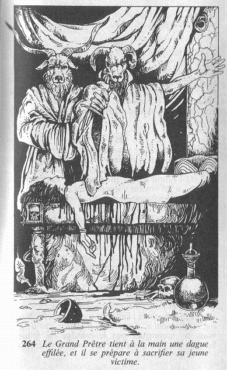

Vous vous relevez en grimaçant de douleur, et vous regardez autour de vous. Vous vous trouvez dans un long et sombre tunnel au bout duquel vous apercevez une lueur. Vous vous avancez avec précaution, et vous ralentissez encore l'allure lorsque des bruits de voix commencent à vous parvenir ; ou plus exactement, une espèce de chant long et monotone. Bientôt, vous pouvez voir ce qui se passe. Une quarantaine de personnes sont assemblées autour d'un grand feu. Un peu à l'écart du feu est dressé un autel sur lequel une jeune femme est étendue, pieds et mains liés. Il vous est impossible de voir les visages des personnes présentes, car elles ont toutes la tête recouverte d'une tête de bouc. Devant l'autel, et en son milieu, se tient un personnage de grande taille, vêtu d'une sorte de robe de cérémonie. Son masque a été teint en mauve. Il tient à la main une dague effilée, et il se prépare à sacrifier sa jeune victime.  Allez-vous assister à la cérémonie, essayer de chercher le moyen de vous enfuir ou porter secours à la jeune femme ?